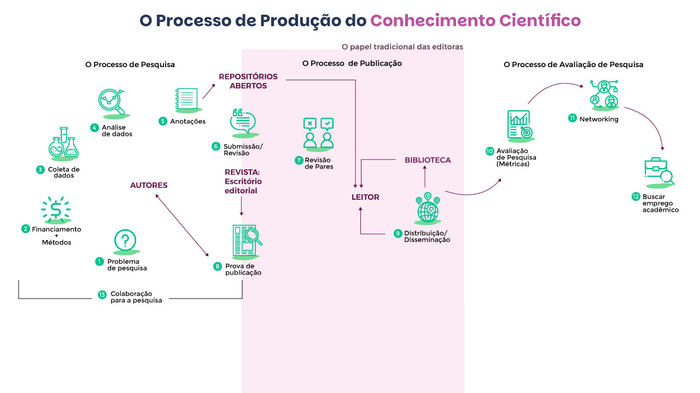
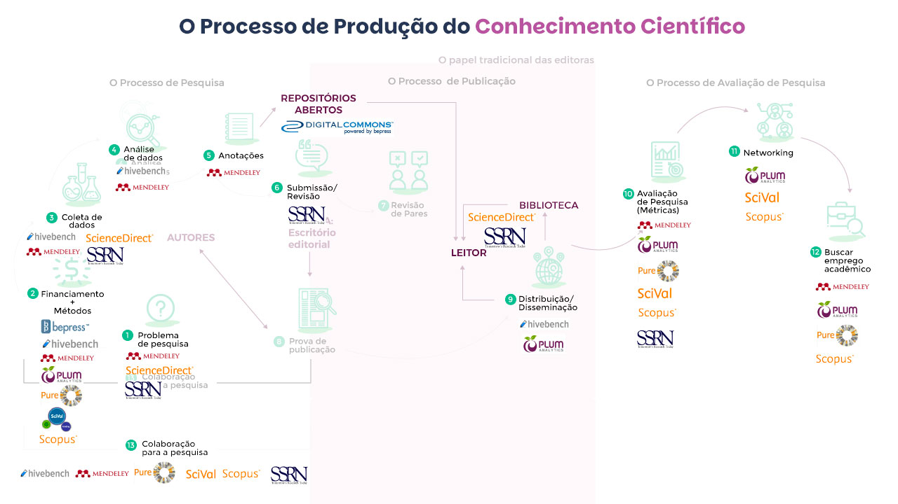

Módulo 1 . Aula 3
Visões críticas
Módulo 1 . Aula 3
Visões críticas
da Ciência Aberta
 Objetivos da aula
Objetivos da aula
Nas aulas anteriores, vimos os argumentos favoráveis e as expectativas depositadas na Ciência Aberta. Nesta aula, apresentaremos as principais críticas, questionamentos e possíveis consequências não planejadas. Ao final, você será capaz de:
- Conhecer críticas que problematizam o avanço neoliberal sobre a ciência por meio do capitalismo de plataforma e suas possíveis consequências.
- Conhecer visões críticas que apontam a injustiça baseada em dados e o epistemicídio.
- Conhecer as reflexões da OCSDnet sobre a implementação da Ciência Aberta em países do Sul Global em relação a questões como participação e representação; potenciais benefícios e reprodução de desigualdades; tecnologia e acesso.
- Reconhecer que não há um único roteiro para implementação da Ciência Aberta.
- Conhecer os princípios para uma Ciência Aberta e colaborativa propostos pela OCSDNet e a experiência Ciência Aberta Ubatuba – uma pesquisa-ação que refletiu sobre a Ciência Aberta e sua relação com o desenvolvimento local.
Avanço neoliberal sobre a ciência
No artigo “O Futuro da Ciência Aberta”, o historiador e filósofo da economia Philip Mirowski (2018) faz críticas contumazes à proposta da Ciência Aberta, reconhecendo que ela não é um porvir, mas representa mudanças já em curso. O autor analisa os quatro principais argumentos contra o “antigo regime da ciência” e conclui que a Ciência Aberta, tal qual vem sendo implementada, não consertará aquilo que se julga problemático. Segundo o autor, além da iminente frustração de expectativas, o que está em jogo é a quebra do monopólio histórico da produção de conhecimento a partir de um estranho discurso “sem cheiro de mercado”.
Nesse sentido, Mirowski descreve a Ciência Aberta como a associação de um ethos de uma "ciência radicalmente colaborativa" às estruturas emergentes do "capitalismo de plataforma".
"O movimento da Ciência Aberta é um artefato do atual regime neoliberal da ciência, que reconfigura ambas as instituições e a natureza do conhecimento para melhor se adequar aos imperativos do mercado”.
(Mirowski 2018, pág. 172)
Você sabe o que é capitalismo de plataforma? Sabe a diferença em relação ao cooperativismo de plataforma? Ouça o podcast a seguir e conheça:
Problematizando as expectativas da Ciência Aberta
Sobre os quatro problemas que a Ciência Aberta resolveria, Mirowski (2018) contra-argumenta:
Considera inadequada a estratégia de aproximar as pessoas do fazer científico para combater a resistência e o ceticismo crescentes em relação à ciência porque, citando pesquisas de Gauchat (2015), a hostilidade atual se concentra em dois públicos específicos e seus questionamentos sobre a relação Ciência e Estado: conservadores, neoliberais, com alta escolaridade que consideram que os cientistas precisam se adequar à disciplina de mercado e grupos religiosos que rejeitam a autoridade da ciência, considerando sua contribuição irrelevante para o debate e resolução de controvérsias públicas.
Mirowski (2018) afirma que o atual impulso para democratizar a ciência adota uma conotação diferente de ampliar o “mercado de ideias”. Ela se limitaria a oferecer uma participação roteirizada, pré-definida, de um público considerado “não credenciado” em determinadas etapas do processo de pesquisa. O autor aponta que o caráter democrático da Ciência Aberta não significa qualquer contribuição política dos cidadãos na agenda ou governança da própria ciência.
Mirowski (2018) argumenta que os indicadores não apontam uma desaceleração da produção de conhecimento científico, mas que a “baixa produtividade” citada pelos “evangelistas” da Ciência Aberta se refere, de maneira precisa e localizada, ao setor farmacêutico e a produção de novas drogas. Para o autor, a citação constante da área biomédica, de testes clínicos e da descoberta de novas drogas indica, de modo inequívoco, o cerne do real interesse. Haveria um flerte constante entre Ciência Aberta e a grandes farmaceuticas com apoio discursivo de jornais científicos consagrados (Nature, Science, Cell), imprensa (The Economist) e estudos duvidosos, patrocinados por empresas farmacêuticas que comprovariam a impossibilidade de replicar pesquisas através do sistema atual (BAYER, 2011).
O autor enfatiza que a propriedade intelectual restritiva é o alicerce da indústria farmacêutica. Por isso, tal flerte origina o modelo híbrido da “inovação aberta protegida” (protected open innovation), que combina controle corporativo com o que considera um módico outsourcing e crowdsourcing (MIROWSKY, 2018, p. 181).
A adoção da perspectiva aberta pelas farmacêuticas seria apenas uma estratégia para reduzir custos, pois a única "abertura" possível no formato atual não se distinguiria de um recrutamento de mão de obra subempregada. Isto porque os cientistas praticamente não teriam controle do processo de pesquisa e receberiam poucas recompensas ou remuneração. Mirowski (2018) afirma que os dez anos de experiência da NIH com o modelo de inovação aberta protegida mostram que ele é pouco promissor.
Identifica que o número crescente de fraudes (plágio, fabricação de dados, manipulação de imagens etc.) e o questionamento público da legitimidade da ciência forçaram, nos anos 1990, alguns editores de revistas científicas a promover a retratação como instrumento para repudiar publicamente artigos que anteriormente foram considerados adequados e, portanto, publicados. No entanto, considera que as retratações são discretamente publicadas, pois indiretamente admitem falhas graves no processo de revisão por pares e fragilizam a reputação das revistas.
Segundo Mirowski, as retratações não eliminam a “ciência ruim”, pois o cerne da crise de reprodutibilidade estaria no modus operandi das revistas, pois elas privilegiam a publicação de resultados positivos por conta de uma noção de “adição de conhecimento" em detrimento dos resultados negativos, muito mais comuns em ciência. O autor caracteriza como “panaceia da Ciência Aberta” adotar a ideia de transparência, no estilo de rede social da internet, como solução para a dita crise, evitando fazer as críticas necessárias sobre uma lógica de publicação de resultados positivos que, segundo Fanelli, torna a ciência menos pioneira e menos objetiva. A fuga dessa responsabilidade é exemplificada por Mirowski na estratégia da Nature em questionar os limites dos métodos de pesquisa e não a responsabilidade dos periódicos. Para o autor, a proposta da Ciência Aberta seria reformar um sistema para gerar um novo modelo de negócio que não cobre apenas a publicação, mas também o processo de revisão.
O avanço do capitalismo de plataforma sobre a produção do conhecimento
Refutados os principais argumentos favoráveis à Ciência Aberta, Mirowisky (2018) faz perguntas incômodas para questionar os interesses subjacentes às propostas, como:
pan_tool_alt CliqueToque e arraste para passar os cartões
Para o autor, a Ciência Aberta, tal qual vem sendo conduzida, representa o avanço neoliberal sobre o campo da produção do conhecimento científico. Este diagnóstico é corroborado pelas pesquisas de Pozada e Chen (2018) sobre as recentes aquisições de três das cinco principais editoras acadêmicas do mundo (Elsevier;Wiley;Taylorand Francis), cujos resultados apontam que elas expandiram seu campo de atuação se reposicionando como “provedores de soluções” ou “analistas de informação” de modo a atuar em todo o ciclo de pesquisa, para além do papel tradicional de editores de periódicos científicos.
Para tal, as antigas editoras estão investindo na acumulação desproporcional de conteúdos científicos e na aquisição de outros serviços, realizando uma “integração vertical” que garanta o seu monopólio sobre bens intelectuais assim como gerar novas fontes de lucro. As figuras abaixo ilustram o ciclo de vida da produção do conhecimento em etapas como pesquisa, publicação e avaliação (figura 1) e a presença da Elsevier, através de seus produtos e serviços (figura 2).
pan_tool_alt Clique e arraste Toque e arraste para visualizar as imagens


Se, por um lado, a integração de conteúdos e serviços acadêmicos pode gerar benefícios práticos para o desenvolvimento de pesquisa, os riscos associados à construção de monopólios são assustadores uma vez que essas empresas se tornam ponto de passagem obrigatório para a produção de conhecimento científico. A “integração vertical” de conteúdos e infraestruturas incorpora todo o fluxo de trabalho da pesquisa científica nos produtos, serviços e estratégias de cinco megacorporações da indústria editorial.
As principais consequências são:
- O aumento da dependência de consumidores (universidades, professores e pesquisadores) em relação às linhas de produtos dos “provedores de soluções”;
- O aumento da influência e o controle das editoras em nível individual e institucional;
- O fortalecimento do poder de monopólio (pela garantia da demanda contínua);
- O agravamento de desigualdades no fazer científico fora desses esquemas;
- O aumento da vulnerabilidade de pesquisadores e instituições, especialmente aquelas em países em desenvolvimento; ameaça à diversidade na produção de conteúdo;
- Implicações diretas na capacidade dos pesquisadores de encontrar empregos, ou acesso a financiamento e colaborar com outros pesquisadores; a exacerbação de uma estratégia rentista etc.
Na contramão do capitalismo de plataforma e da integração vertical, o Humanities Commonsé uma plataforma de código aberto e sem fins lucrativos criada por sociedades acadêmicas para atender às necessidades de estudantes e pesquisadores do campo das Humanidades. Seu objetivo é ser um espaço para discutir, compartilhar e armazenar pesquisa e pedagogias inovadoras. É a principal alternativa a produtos como o Academia.edue o Research Gate.
A (in)justiça baseada em dados: discriminação, vigilância e perda de autonomia
Como já vimos anteriormente, uma prática da Ciência Aberta é a abertura de dados. Nesta linha, o campo da “justiça de dados” (data justice) pesquisa e reflete, a partir da ideia de justiça social, como os indivíduos, comunidades e diferentes “sujeitos de dados” estão implicados no processamento de dados e como eles são percebidos na sociedade como resultado da datificação.
Esta situação é especialmente sensível pelo enorme volume de dados digitais acumulados nas instituições de pesquisa e ao seu potencial da mineração de texto e de dados para identificar correlações, padrões e tendências e subsidiar previsões e a tomada de decisão.
Mas vc sabe qual a diferença entre formatos abertos e fechados? Observe os cards comparativos a seguir.
Você sabe o que é datificação? Ouça a seguir e entenda.
Juntos, governos e empresas podem gerar um sistema interseccional que cruza múltiplas formas de discriminação a partir de categorias biológicas, sociais e culturais, tais como gênero, raça, classe, capacidade, orientação sexual, religião, idade etc.
Basta lembrar das revelações de Edward Snowden sobre o sistema de vigilância criado pela Agência de Segurança Nacional (National Security Agency- NSA em inglês) em cooperação com funcionários da Booz Allen Hamilton.
Mais além, Taylor (2017) destaca que a novidade atual é a impossibilidade de diferenciar a coleta e análise de dados voluntárias (informada e com consentimento) das involuntárias (através de devices e sensores). Essa nova dinâmica gera um mercado global no qual os dados pessoais são a mercadoria de um capitalismo informacional disputado justamente pelas empresas. As principais ameaças seriam:
pan_tool_alt CliqueToque e arraste para passar os cartões
Algumas questões, eminentemente políticas, a serem enfrentadas nesse “lugar incômodo” onde acontece fricções entre indivíduos e Estado, entre o público e o privado, entre a ciência e o público, com reverberações em temas como privacidade, responsabilidade e prestação de contas (accountability) são: Como balancear e integrar a necessidade de ser visto e representado de maneira apropriada com as necessidades de autonomia e integridade? Quais são os bons princípios de governança para o uso da big data em um contexto democrático e quem deve determiná-los? (TAYLOR, 2017)
Cidadão Quatro (2014)
Em 2013, a diretora Laura Poitras recebeu um e-mail assinado com o pseudônimo “citizen four”. O contato foi o primeiro de uma série em que Edward Snowden, ex-analista de sistemas da Agência Nacional dos Estados Unidos (NSA), revelaria detalhes sobre o escândalo que comprovou atos de espionagem por parte do governo norte-americano. Vencedor do Oscar de melhor documentário, o longa retrata os primeiros encontros entre Laura, Snowden e o jornalista Glenn Greenwald, do jornal britânico The Guardian, responsável pela divulgação dos primeiros materiais. Assista ao filme on-line
O epistemicídio
![A imagem apresenta uma ilustração simples e estilizada de uma balança, simbolizando comparação ou equilíbrio entre dois grupos de pessoas. Em ambos os lados da balança há um círculo com três pessoas com perfis diferentes desenhadas. Acima dos dois círculos aparece um pequeno ícone de um cérebro junto a um livro, sugerindo ideias como aprendizagem, conhecimento ou pensamento. A balança está ligeiramente inclinada, com o lado direito mais baixo, sugerindo que esse grupo tem mais peso ou relevância no contexto representado.](../media/modulo1/aula3-img5.png "Fonte: unsplash.com")
Tema pouco presente nos debates atuais sobre a Ciência Aberta, o epistemicídio é um termo popularizado pelas obras de Boaventura de Souza Santos e se refere às tentativas de exterminar determinados sistemas de conhecimento. Para o autor, haveria um “pensamento abissal” que separa aqueles que detêm o conhecimento (e o poder) daqueles que devem ser extintos, inferiorizados ou invisibilizados.
Enquanto os pesquisadores profissionais são legítimos produtores de conhecimento válido, os leigos, os camponeses, os indígenas, as mulheres, as pessoas com deficiência, a população LGBTQIAPN+ entre tantas outras “minorias” são vinculadas ao plano das crenças e das opiniões subjetivas que, na melhor das hipóteses podem ser objetos de pesquisa, mas não sujeitos de conhecimento.
“O pensamento abissal consiste em conceder à Ciência Moderna o monopólio da distinção universal entre verdadeiro e falso em detrimento de corpos alternativos de conhecimento."
SANTOS, 2007, p. 47.
Por isso, em uma perspectiva histórica, o epistemicídio remete à destruição de conhecimentos, saberes e culturas tradicionais pela cultura europeia nas experiências coloniais e o papel estratégico da Ciência Moderna em dominar a natureza e estabelecer os meios para a exploração e apropriação dos recursos da América, África e Ásia.
Na atualidade, o epistemicídio é ainda uma forte tradição das instituições de educação superior e sua recorrente exclusão de diversos outros sistemas de conhecimento a partir de categorias como raça, gênero, classe e sexualidade.
A filósofa brasileira Sueli Carneiro (2023) trabalha esta questão, com especial foco na questão racial, observando como o processo educacional brasileiro reproduz práticas racistas, de subalternização e exclusão de pessoas negras, operando a favor de uma hegemonia cultural branca. No processo de hierarquização de saberes, há a desqualificação dos saberes de povos que foram escravizados e discriminados, tratados como incapazes de produzir ciência e conhecimento.
No contexto da Ciência Aberta, essa perspectiva colonial tende a ser agravada pelo produtivismo acadêmico que valoriza como indicadores de “excelência” o número de publicações em revistas indexadas, patentes registradas e a captação de financiamentos públicos e privados. Por isso, é possível produzir “mais conhecimento” e simultaneamente reforçar a “injustiça cognitiva” ao excluir outras comunidades, para além das científicas, igualmente capazes de propor soluções para problemas complexos e coletivos (VISVANATHA, 2009).
Qual Ciência Aberta precisamos?
Se a abertura do processo de produção do conhecimento científico parece se impor como um horizonte inevitável, vale problematizar:
- Como esse novo paradigma, cujas expectativas são variadas e exuberantes, irá lidar com velhas problemáticas como as assimetrias do fazer científico entre países?
- Em que medida essas desigualdades podem ser reduzidas ou agravadas?
- Quais são as garantias de que, a partir de contextos extremamente desiguais, a abertura de informações e dados de pesquisa irá se reverter em benefícios para aqueles que os disponibilizaram?
- Como nos prevenir futuros mecanismos de privatização e mercantilização do conhecimento?
Tomemos o exemplo do movimento pelo Acesso Aberto às publicações científicas. Se, por um lado, ele viabilizou a ampla disponibilização de artigos científicos, por outro lado, ele fomentou uma reação das editoras comerciais que reestruturam seu modelo de negócio para garantir a renda necessária à sua sobrevivência. As editoras deixaram de cobrar assinaturas de leitores e passaram a cobrar “taxas de processamento de artigos” (Article Processing Charges - APC) dos autores por tarefas de editoração e administrativas.
De modo análogo, outros mecanismos de mercantilização do conhecimento científico tendem a ser criados com a abertura do processo científico. Os serviços de métricas alternativas e algoritmos de busca já estão se constituindo a próxima fronteira de exploração capitalista. Além disso, a neutralidade da internet está sob ameaça constante e a lamentável cobrança diferenciada pelo tipo de conteúdo que trafega pela rede pode se tornar uma lamentável realidade.
A experiência da OCSDNet
Para enriquecer o nosso debate, vale a pena conhecer a experiência da “Rede de Ciência Aberta e Colaborativa no Desenvolvimento” (Open and Collaborative Science in Development Network - OCSDNet, em inglês) que financiou 12 projetos de pesquisa em diferentes campos do conhecimento (saúde, mudança climática, educação, direito e o movimento “faça-você-mesmo’ do it yourself) para experimentar a Ciência Aberta no chamado Sul Global.
A rede mobilizou pesquisadores de 26 países da América Latina, África, Oriente Médio e Ásia para produzir uma reflexão crítica a partir de experiências empíricas e três questões (OCSDNet, 2017, p.2):
pan_tool_alt CliqueToque e arraste para passar os cartões
Não há um único roadmap para Ciência Aberta
Após dois anos de atuação, a rede concluiu que não há uma única maneira “correta” de fazer Ciência Aberta na medida em que as inovações precisam atender às demandas locais, aos diferentes contextos, exigindo negociação e reflexão constantes. Este entendimento corrobora com a premissa de que a abertura não é uma condição binária restrita aos mecanismos de acesso e reúso do conhecimento. Por isso, adicionar o adjetivo “colaborativa” à noção de Ciência Aberta sinaliza a importância de princípios e dinâmicas de colaboração e participação de diversos atores em uma variedade ampla de contextos institucionais, com motivações, valores e intenções distintas (CHAN, OKUNE, SAMBULI, 2015, p. 100).
Seu Manifesto da Ciência Aberta e Colaborativa: em direção de uma ciência inclusiva pelo bem-estar social e ambiental (2017)propõe sete princípios para orientar a Ciência Aberta e promover uma abordagem mais inclusiva de ciência no contexto do desenvolvimento.
Princípios para uma Ciência Aberta e Colaborativa segundo a OSCDNET (2017, p. 2-3)
A seguir, vamos conhecer os princípios para uma Ciência Aberta e Colaborativa segundo a OSCDNET (2017, p. 2-3):
O conhecimento cresce quando é compartilhado, portanto, deve ser concebido como um bem comum. A Ciência Aberta e colaborativa se esforça para diminuir a distância entre o bem-estar da população e o conhecimento científico. Para alcançá-lo, a ciência deve criar mecanismos e incentivos que permitam os indivíduos decidirem como usar, compartilhar, governar e gerenciar seu conhecimento para satisfazer as necessidades de desenvolvimento.
Não é possível obter justiça social global sem justiça cognitiva. A pluralidade e a diversidade de saberes, assim como o direito de coexistência entre compreender e produzir conhecimentos são reconhecidos como valores pela Ciência Aberta e colaborativa. Considera-se que todos os atores estão preparados para estender suas capacidades para utilizar, compartilhar e criar conhecimento. A justiça cognitiva é uma condição necessária para uma ciência mais justa e igualitária.
Reconhece que ao compartilhar conhecimento podem surgir efeitos indesejados para certas comunidades. A prática de uma abertura situada pode ajudar a entender como o contexto, as relações de poder e as desigualdades estruturais condicionam a produção e a distribuição de poder. A Ciência Aberta e colaborativa promove o uso de marcos conceituais, mecanismos e ferramentas que habilitam todos os grupos sociais a definir e expressar as condições sob as quais seu conhecimento pode ser compartilhado e utilizado.
Na Ciência Aberta e colaborativa, os cidadãos, os integrantes das comunidades e a sociedade civil, com antecedentes e contextos culturais diversos, têm o direito a pesquisar e são bem-vindos a participar em todas as etapas do processo de pesquisa como sócios em igualdade de condições e com capacidade de decisão. Uma participação significativa contribui para que os indivíduos que estão fora da academia desenvolvam capacidades de pesquisa, aportando mais perspectivas, métodos e cosmovisões ao processo científico.
Na Ciência Aberta e colaborativa, os cientistas e as comunidades colaboram na qualidade de pares para criar novos conhecimentos através de laboratórios cidadãos, hacker e makerspaces, oficinas de ciência, centros comunitários de pesquisa e outras iniciativas. Acreditamos que desenvolver confiança e apreciação pelos saberes, habilidades e experiências de cada um é a chave para alimentar um espírito de criação conjunta e inovação social.
As infraestruturas, ferramentas, plataformas, software e tecnologias disponíveis na pesquisa científica muitas vezes excluem as pessoas com deficiências e/ou acesso digital limitado. A Ciência Aberta e colaborativa se apoia em tecnologias de código aberto, que são livres, acessíveis e de baixo custo, e que, portanto, permitem incluir ou interessar as personas que geralmente não participam do processo científico. É preciso promover o desenho de tecnologias acessíveis e inclusivas que permitam a múltiplos atores com suas diversas capacidades utilizar e criar ferramentas para acessar o conhecimento científico.
Na Ciência Aberta e colaborativa, o desenvolvimento sustentável não é um fim em si mesmo, mas parte do processo. Acredita-se que a responsabilidade primária da ciência é melhorar o bem-estar da sociedade e do planeta mediante a produção de conhecimento. A Ciência Aberta e colaborativa quer criar relações, capacidades e oportunidades que permitam às pessoas trazerem as necessidades sociais e ambientais do planeta para o centro da agenda de pesquisa, cocriando soluções sustentáveis, relevantes e inovadoras para os desafios complexos de nossa geração.
Apontamentos de uma experiência brasileira
O projeto Ciência Aberta Ubatuba foi uma das doze pesquisas financiadas pela OCSDNet. Coordenado pelo Instituto Brasileiro em Informação, Conhecimento e Tecnologia (Ibict), o estudo seguiu a metodologia de pesquisa-ação com o objetivo de compreender quais são as questões institucionais, políticas e culturais que influenciam a adoção da perspectiva da Ciência Aberta e colaborativa em temas de desenvolvimento.
Ao longo do projeto, o grupo de pesquisa identificou que, para além do conhecimento produzido pelas universidades, o município reúne outros atores cognitivos (indivíduos e organizações) que produzem conhecimento situado justamente pela sua inserção no território. No entanto, como a base epistêmica dos grupos é diferente das instituições científicas e das administrações públicas, suas contribuições geralmente não são consideradas válidas no debate público.
![A imagem apresenta uma composição gráfica relacionada com localização geográfica e pessoas. À esquerda, vê-se o mapa do estado de São Paulo, no Brasil, dividido em várias regiões internas, todas destacadas em verde. No canto inferior esquerdo desse mapa, há um pequeno quadro com o mapa do Brasil em cinzento, onde uma área específica (no sudeste) está destacada em cor mais escura, indicando a localização do estado dentro do país. À direita do mapa principal, aparecem três retratos estilizados de pessoas, organizados verticalmente dentro de círculos com contorno verde. Mais à direita, há três ícone ligados aos retratos das três pessoas.](../media/modulo1/aula3-img7.png)
Por isso, a apropriação do conhecimento produzido nas universidades pelos atores locais é uma das estratégias para validar argumentos, especialmente em controvérsias e situações de conflito, pois podem ajudar a legitimar conhecimento comunitário sem reconhecimento político. No entanto, os atores locais também produzem informação e conhecimento, disputando sua representação na forma de mapas já que eles são o principal instrumento para visualizar questões e definir políticas públicas, como o zoneamento ecológico econômico. Este foi o mote para o desenvolvimento de um protótipo de plataforma de dados georreferenciados, o Linda Geo (Litoral Norte Dados Abertos Geoespaciais).
Como parte de sua intervenção, o projeto Ciência Aberta Ubatuba estimulou a porosidade entre diferentes tipos de conhecimento e atores cognitivos. Valorizar a diversidade de modos de produção de conhecimento é reconhecer que expressam diferentes modos de existência, de viver em comunidade, de lidar com a Natureza e, portanto, diferentes perspectivas sobre a questão do desenvolvimento. Aqui, a cocriação do conhecimento visa aprofundar a própria democracia ao favorecer a participação em processos decisórios sobre a vida em comum.
Assista a seguir o vídeo final de documentação das atividades da Plataforma Ciência Aberta Ubatuba, desenvolvida entre 2015 e 2017 em Ubatuba e região:
Agora que você já conheceu as visões críticas da Ciência Aberta, vamos conhecer como está o cenário atual no Brasil e no mundo.
Como citar esta aula:
CLINIO, Anne. Visões críticas da Ciência Aberta. In: JORGE, Vanessa; CLINIO, Anne (Coord.). Programa de Formação Modular em Ciência Aberta. Módulo, 1. Fundamentos da Ciência Aberta. Aula 3 (2.a edição), Rio de Janeiro: Fiocruz, 14 ago. 2025 Disponível em: https://mooc.campusvirtual.fiocruz.br/rea/ciencia-aberta-2ed/modulo1/aula3.html. Acesso em: 14 nov. 2025